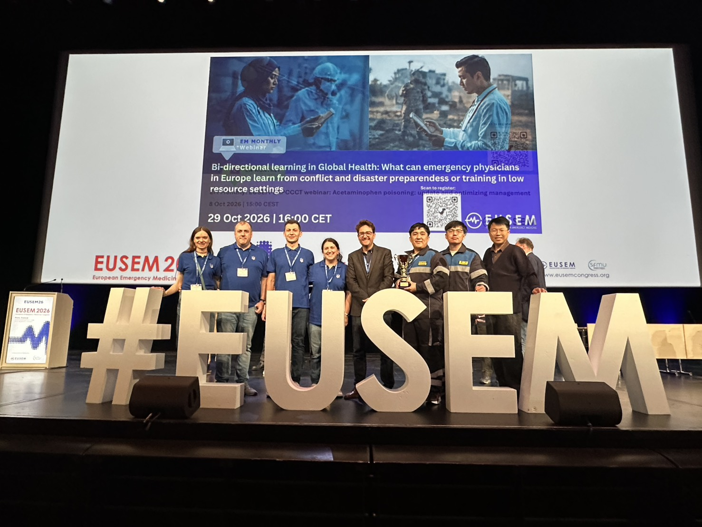

最新一期

2026 年 10 月刊
2026/10 發行｜責任編輯：李宗翰
- 台灣之光｜Team Taiwan：比獎盃更值得帶回台灣的事，2026 EUSEM 團隊參賽心得
- 新知分享｜胸痛一定要送急診嗎？PreHEART 3 開啟院前精準分流新思維
- 國際交流｜救護 × 執法，救在當下：CIT 跨域合作與危機介入國際研討會紀實
- 近期活動｜創傷前線研討會、冬季學術研討會暨 1119 台灣急診日、TAEMSP 會員大會
近期活動
115 年 11 月 7-13 日｜2026 8th EMS ASIA
地點：新加坡濱海灣金沙會議展覽中心 主辦單位：亞洲緊急醫療服務協會（AAEMS）、急救醫療醫生分會（SEMSP）
相關連結 →
相關連結 →
115 年 11 月 19 日｜2026 TRAUMA FRONTLINE 創傷前線研討會
地點：大里藝術廣場 3 樓國際會議廳（臺中市大里區） 主辦單位：臺中市政府消防局第三救災救護大隊
報名 QR Code 請見本期海報 →
報名 QR Code 請見本期海報 →
115 年 11 月 29 日｜2026 冬季學術研討會暨 1119 台灣急診日
地點：中山醫學大學誠愛樓 9 樓（臺中市南區） 主辦單位：台灣急診醫學會、中山醫學大學附設醫院 報名截止：115 年 11 月 15 日
相關連結 →
相關連結 →
115 年 11 月 29 日｜TAEMSP 第五屆第二次會員大會暨學術研討會－醫在現場，救向未來
地點：中山醫學大學誠愛樓 10 樓多功能教室 7（臺中市南區） 主辦單位：台灣緊急救護醫療指導醫師學會、中山醫學大學附設醫院急診部
相關連結 →
相關連結 →